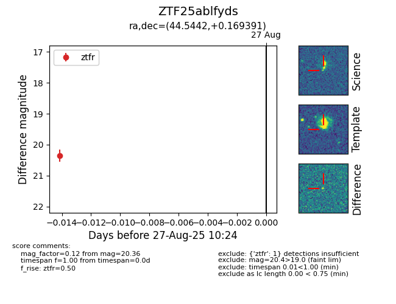

Target ZTF25ablfyds at 2025-08-27 10:24, see:
FINK: fink-portal.org/ZTF25ablfyds
Lasair: lasair-ztf.lsst.ac.uk/objects/ZTF25ablfyds
ALeRCE: alerce.online/object/ZTF25ablfyds
alt names
ZTF25ablfyds (ztf,fink)
coordinates:
equatorial (ra, dec) = (44.5442,+0.16939)
galactic (l, b) = (176.2918,-49.11153)
photometry
last ztfr=20.36
1 ztfr detections
